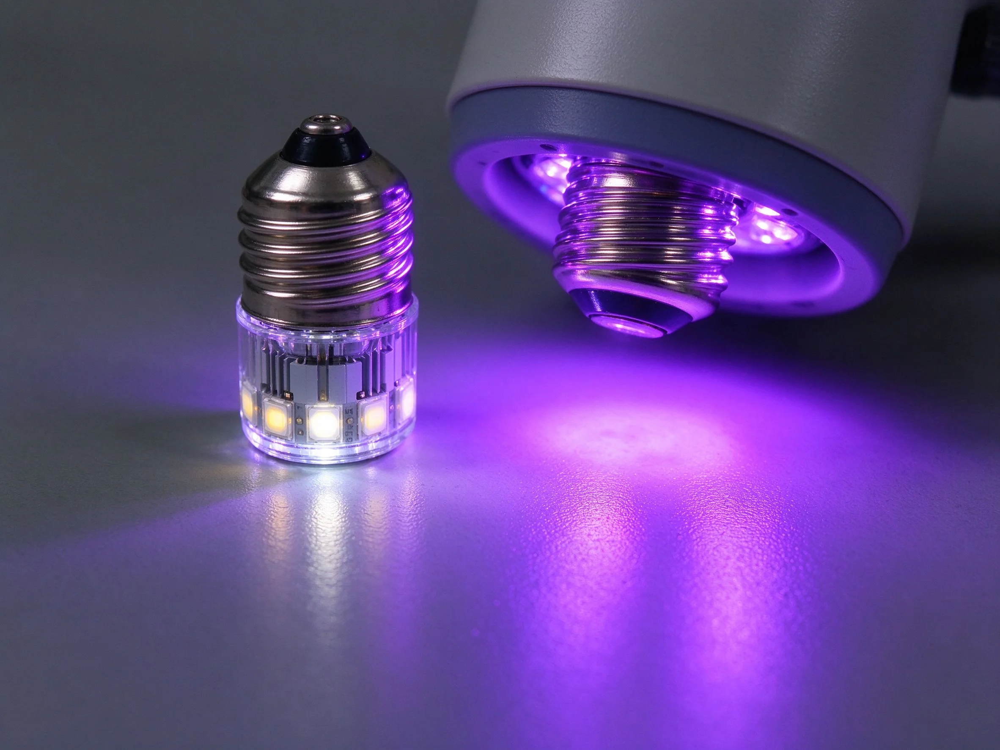

美甲LED燈vsUV燈比較：美甲光療燈怎麼選：LED快但挑膠一次搞懂
這篇做的是「LED燈vsUV燈比較：美甲光療燈怎麼選」的對照表：LED快／UV廣。核心差異一句話——LED快但挑膠。看完你就能在挑款式時立刻分得出該用哪一套。
LED燈vsUV燈比較：美甲光療燈怎麼選美甲詳細對照表
| 比較面向 | LED燈vsUV燈比較：美甲光療燈怎麼選 |
|---|---|
| LED快但挑膠 | LED快但挑膠 |
| UV通用 | UV通用 |
| 功率要夠 | 功率要夠 |

- 代表工法：LED快／UV廣
- 代表成品：選對燈
- 一句話分：LED快但挑膠
為什麼LED燈vsUV燈比較：美甲光療燈怎麼選常被搞混？美甲師解答
因為它們都屬於美甲的「買燈比較」，做出來的成品乍看很像，甚至同一位美甲師會同時用。真正的分水嶺不是『看起來像不像』，而是『用在哪種場合』。把這一層想通，以後看款式就不會卡住。
LED燈vsUV燈比較：美甲光療燈怎麼選記憶口訣：美甲挑款秒判斷
LED快但挑膠。下次在款式圖上看到「LED快但挑膠」，先問自己：它比較偏哪一邊？三秒就能下判斷。
美甲LED燈vsUV燈比較：美甲光療燈怎麼選到底該選哪個？
LED快／UV廣。要做「買燈比較」的場合，優先考慮這一套的持久度與好卸程度；另一套則在需要更多變化或硬度時補位。記住：一個需求只認一個主做法，其餘都是配角。
LED燈vsUV燈比較：美甲光療燈怎麼選美甲常見問題 FAQ
Q：為什麼要把這兩個放一起比？ A：因為它們常被搞混——同屬買燈比較、成品相近，連工具都可能共用。把差異攤開，比單獨背兩個定義更快記住。
Q：初學者先看哪一個？ A：先看「選對燈」這組對照，把兩種做法的『LED快但挑膠』各自放大看一次，差異會自己跳出來。